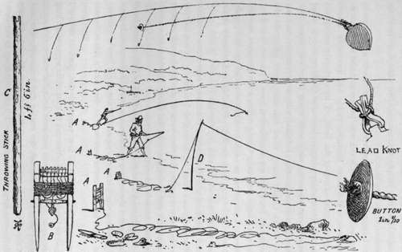

Float. Part 4
Description
This section is from the book "Sea Fishing", by John Bickerdyke. Also available from Amazon: Sea Fishing.
Float. Part 4
If only one line is used the fisherman will, of course, hold it in his hand, and immediately he feels a bite haul it in. If he has two lines, it is a common practice to fasten the end of one to a supple wand six or seven feet long, which has been stuck upright in the sand. By watching this wand the fisherman can at once see if he has a bite from a fish of any size. The method by which this tackle is pitched out is decidedly clever, and I have no doubt the baits can be projected a greater distance than can a paternoster. But after all it is a very rough-and-ready kind of fishing, much akin to the laying of long lines, for either the fish hook themselves or escape with the bait—more often the latter. If mussels are used as baits on these lines, a dozen hooks will be robbed for every fish caught, and this simply because the fish cannot be properly hooked when they bite.
EAST COAST THROW-OUT LINE.
I have had many opportunities of contrasting the results obtained by fishing with rod and paternoster and these throw-out lines. The more scientific tackle has invariably beaten the older method out of the field. I have already mentioned in the introductory chapter how one October day I stood between two persons who were using throw-out lines each bearing thirteen hooks. I fished with a paternoster, and my two hooks caught many more fish than were taken on the twenty-six hooks on my neighbours' lines ; yet we were using the same baits and were fishing within a few yards of one another. I, of course, was able to detect the slightest bite ; could at once strike and hook the fish. Possibly, too, my finer tackle had something to do with it; though I doubt if cod in the thick water of the East coast exhibit any appreciation of our efforts to please them in the way of fine tackle. Certainly my hooks were superior, for they were of the kind used in fresh water, and much sharper than the tinned abominations which for years have been used in the sea.
A paternoster suitable for this method of fishing may be of single gut if the codling run from one pound to five pounds ; but if anything much larger is expected, twisted gut should certainly be used, for the angler may have to deal with a fish of twenty to thirty pounds. The right sort of paternoster is illustrated on page 239. When I first practised this kind of fishing I used to think the great point was to cast as far as possible, long casting being a weakness common to most young fishermen, who always think the fish lie mainly under the opposite bank of the river or the other side of the Atlantic. But I had a very wholesome lesson one evening. I had gone down to the shore after dinner, taking my rod and a few mussels, and fished for a good hour without getting a solitary bite. I was just giving up in despair when three little urchins, the eldest of whom could not have toddled on this earth for more than ten years, came trotting down the beach. One of them had a penny ball of string ; another a hook tied on gut ; while the third produced three mussels. Twine-makers do not give us much string for a penny ; so the line was very short, and after a stone had been fixed to the end of it and the hook tied on and baited, the most the little fellows could do was to cast their bait a yard or two beyond the point where small waves were breaking on the shore.
I do not know if my face bore a pitying smile, but I certainly felt that way, and was searching my pockets to see if I had not a piece of string which could be attached to the youngsters' line, when, behold, the eldest raised a scream of delight and hauled in a Codling of about two pounds. I was distinctly humiliated, but was not too proud to profit by the lads' experience ; so I quickly reeled in my line and made a fresh cast, placing the paternoster just over the line of little breakers. There the fish were in thousands, I should say, for hardly had the bait reached the bottom before I had a bite. I continued pulling out fish one after the other until I had about a dozen and a half, when I had to return to the town. I think the boys caught two or three more ; but, being thankful for the lesson they had unconsciously given me, I presented them with most of my codlings.
After that experience, whenever I found the fish were not feeding at the usual distance, I would wind in a few yards of line ; then wait a minute or two, and if no bite came, wind in a few more yards and wait again ; and so on until the paternoster was brought right up to the shore. This movement of the paternoster was, in fact, a thorough searching of the fishing ground, and it had a secondary advantage, for the slight motion given to the baits often made the fish bite when they were not very well on the feed.
The rod for this kind of fishing should not be too short, as if there are any waves it is necessary to hold the line above them. If this cannot be done, when the waves break, each mass of water strikes the line and the paternoster is jerked shorewards.
When the fish are supposed to be plentiful it is certainly desirable to have a large number of mussels ready opened for continued fishing. I have often heard it stated that mussels lose some of their virtue and are not nearly so killing if they have been opened some time. This may be true to a limited extent; but when codlings are feeding greedily they are certainly not particular, and the great point is to lose no time. Mr. Aflalo recommended opening mussels and laying them out to dry in the sun before using them as baits.
It is obvious that when a fish takes the bait and swims shorewards or towards the angler there will be no pull on the rod. The line will suddenly feel slack, and when this happens we should strike just as much as when a pull is felt. When the fish are biting shyly it is sometimes a good plan to ease the line to them a little at the first signs of a bite. But this should be only a momentary easement, and a second later the strike should come. At night-time the upper hook will often take most fish, and indeed, when the tides suit, the best shore fishing for codling is obtained after sunset.
Continue to:
- prev: Float. Part 3
- Table of Contents
- next: Float. Part 5
Tags
fishing, hooks, bait, fishermen, spanish mackerel, mackerel fishing